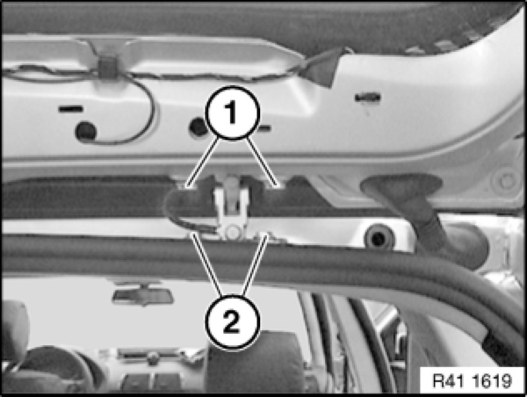

Trunk / Liftgate: Adjustments
41 62 014 - Adjusting rear lid
Read contents of Body, General Service Precautions.
The E83 gap dimensions serve as the basis for adjustment work.
Make unpainted surfaces visible by also moving the hinges. Touch these up in the appropriate color.

Release screws (1) on rear lid hinge to rear lid so that rear lid can still be moved.
If adjustment range is not enough, also slacken screws (2).
Adjust rear lid.
Adjust rear lid lock Adjustments.
Retighten all screws.